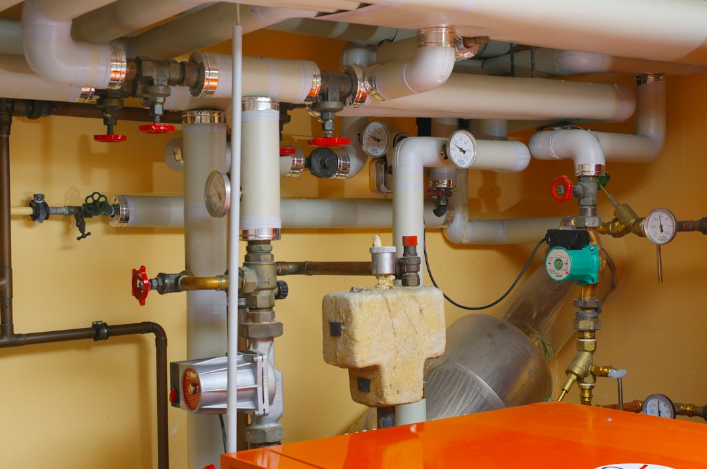

For a standard tank replacement, the supplied guide uses a broad installed planning range of $600 to $3,100. Tankless installation is treated separately at $1,400 to $5,600 because venting, gas or electrical changes may be part of the job. Heat pump installation is listed at $3,200 to $4,700. The practical answer is to brief the plumber on heater type, state, ZIP, access, symptoms and whether the job is replacement, conversion or repair.
For homeowners comparing water heater installation plumbers, the useful starting point is not a single advertised price but a clear description of the heater, location, symptoms and likely scope.
Water Heater Installation Plumbers Explained
Plumber for Water Heater Installation frames the quote conversation around the decision that changes the job most: whether the homeowner needs a standard tank replacement, a tankless installation, a heat pump fit, or help deciding between repair and replacement. That distinction matters because the supplied cost bands are not interchangeable.
A like-for-like tank job can often be scoped around the existing heater, fuel, location and access. A conversion needs different questions, especially if the job may involve venting, gas, electrical or space constraints. The related water heater installation guide is useful background when the question is still broad and the homeowner has not yet narrowed the job type.
- State and ZIP help frame licence, permit, travel and local authority assumptions.
- Heater path separates tank replacement, tankless conversion, heat pump fit and repair questions.
- Symptoms and access show whether the issue is urgent, leaking, difficult to reach or likely to need extra work.
What A Clear Brief Should Include
A strong quote brief names the existing setup before asking for price. The supplied guide suggests telling the installer whether the heater is gas, electric, tankless or heat pump, where it sits in the home, and what symptom triggered the call. That gives the plumber enough context to decide whether the first conversation is about repair, replacement or conversion.
The quote should be split into the heater, labour, permit assumption, disposal and any venting, gas, electrical or access work. That structure makes it easier to compare two prices without mistaking a narrower quote for a better one. It also reduces the risk of treating a national planning range as a site-specific offer.
For water heater installation plumbers, the most useful quote request is specific without pretending to diagnose the whole job. A homeowner can say: I have a gas, electric, tankless or heat pump heater in a garage, basement, closet or utility room, and I want to know whether the job is like-for-like, repair or conversion.
Cost Bands And Why They Split
The supplied source separates three planning ranges. Standard tank replacement is listed at $600 to $3,100. Tankless installation is listed at $1,400 to $5,600. Heat pump water heater installation is listed at $3,200 to $4,700. Those figures are broad installed ranges, not promises for a specific property.
The reason to keep the bands separate is scope. A standard replacement can be a different job from a tankless installation, and a heat pump fit brings its own suitability questions. If a quote sits outside the expected band, the next step is not to reject it automatically. Ask which line item moved: heater choice, labour, permit handling, disposal, venting, gas, electrical or access.
Do not treat the lowest number as the target if the job changes heater type or building services. The source guide recommends comparing like-for-like work against the standard replacement band and treating conversions as a different category.
Permits, Code And Local Checks
The supplied guide is careful about permits because the local answer can change the job. It names Oregon as an example where water heater replacement can be permit-required plumbing work, while also stating that the city or county rule is the one that matters. That is the right way to use a location clue: as a prompt to check the relevant authority, not as a national rule.
Ask who checks the permit requirement, who files or arranges it, and who schedules inspection if one is needed. Also ask whether the quote assumes any code-related work beyond the heater itself. If the installer cannot answer until seeing the site, ask them to mark the assumption clearly so the comparison is fair.
For a homeowner comparing plumbers across states, the state and ZIP fields are not filler. They help frame licence, permit, travel and local authority assumptions before the first call.
Who This Applies To
This guide is for homeowners preparing to speak with an installer, not for readers trying to self-diagnose every plumbing detail. It is most useful when the heater type is known, the symptom can be described, and the homeowner wants the quote conversation to start with the correct category.
- Use it for a leaking or failing tank when the likely path is replacement.
- Use it for tankless or heat pump questions when the fit is not obvious.
- Use it when an installer price needs to be unpacked into heater, labour, permit assumption, disposal and extra scope.
- Use it when a rebate, credit or incentive is mentioned and current proof is needed before relying on it.
The source guide also cautions against assuming a 2026 federal heat pump credit, because the reviewed IRS page documented the relevant credit through December 31, 2025. Treat any incentive claim as current-only unless the installer or programme source can show the active rule.
- Identify the current heater. Record whether the existing unit is gas, electric, tankless or heat pump, plus the location and symptom.
- Classify the job. Ask whether the work is like-for-like replacement, repair, tankless conversion or heat pump fit.
- Separate the quote. Request line items for heater, labour, permit assumption, disposal, and any venting, gas, electrical or access work.
- Check local rules. Ask who verifies permit and inspection requirements with the relevant city, county or state authority.
- Verify incentives. If a credit or rebate is part of the decision, ask for the current programme source before accepting the payback claim.
| Job path | Planning range | Quote questions |
|---|---|---|
| Standard tank replacement | $600 to $3,100 | Is it like-for-like, and are permit, disposal and access included? |
| Tankless installation | $1,400 to $5,600 | Does the scope include venting, gas or electrical changes? |
| Heat pump installation | $3,200 to $4,700 | Has the installer checked space, fit and any incentive claim? |
Common questions
What should I send before asking for a water heater quote? Send the state, ZIP, heater type, install location, symptom and timing. The supplied guide uses those details to separate replacement, repair, conversion and heat pump questions.
Why are tank and tankless prices not compared as the same job? The guide treats them as different scopes. Tankless installation can include venting, gas or electrical changes, while a standard tank replacement may be closer to the existing setup.
Are permits always required for replacement? No national rule is stated in the supplied guide. It gives Oregon as an example where replacement can be permit-required plumbing work, then says the city or county answer is the one that matters.
Can I rely on a 2026 heat pump tax credit claim? The source guide says not to assume one. It notes that the reviewed IRS page documented the relevant federal credit through December 31, 2025, so a 2026 claim needs fresh proof.
This guide covers quote preparation, cost bands, permit questions and scope checks for residential water heater installation conversations.